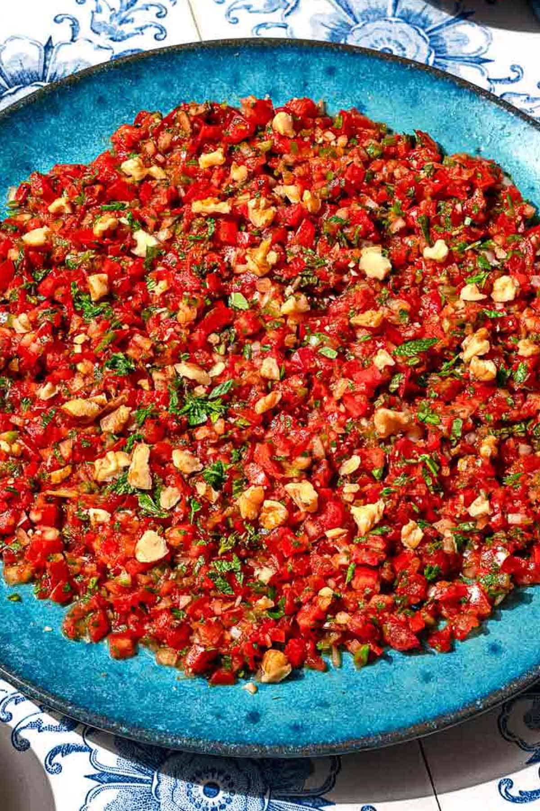

Spicy Ezme

Description
Ezme is a finely chopped spicy tomato recipe from Turkey that lives somewhere between a spread, salad, and dip. My friends abroad refer to it as “Turkish salsa” and it is rightly so, as it delivers a lovely, refreshing salsa vibe, Turkish style.
This recipe is from The Mediterranean Dish. All credits for the recipe go to The Mediterranean Dish. The content is used as part of web development training.
Ingredients
- 1 small white or yellow onion, very finely chopped
- 1 tablespoon Turkish red pepper paste (biber salçası)
- 1 tablespoon double concentrated tomato paste
- 4 medium ripe tomatoes, halved, seeds removed and very finely chopped
- 2-3 small hot green peppers, like serrano or jalapeno, seeds removed and very finely chopped
- 1/4 cup finely chopped parsley
- 1 tablespoon finely chopped fresh mint leaves
- 2 tablespoons extra virgin olive oil
- 1/2 lemon, juiced
- Kosher salt
- Freshly ground black pepper
- 2 tablespoons roughly chopped walnuts
Steps
- Soften and flavor the onion. To a large mixing bowl, add the onion, red pepper paste, and tomato paste. Use your hands to knead and mix them well so that the paste infuses to the onions.
- Mix the salad. Stir in the tomatoes, peppers, parsley and mint. Combine well with your hands for the flavors to infuse. Drizzle the olive oil and lemon juice over, season with salt and pepper to taste, and give them all a good mix. Cover and keep in the fridge until serving. It would be best if you can let the Ezme sit for an hour or so before serving; this will help the flavors mingle and settle.
- Finish and serve. To give this spread a more modern twist, I like to sprinkle a few crushed walnuts over Ezme when serving. Afiyet Olsun.
Home